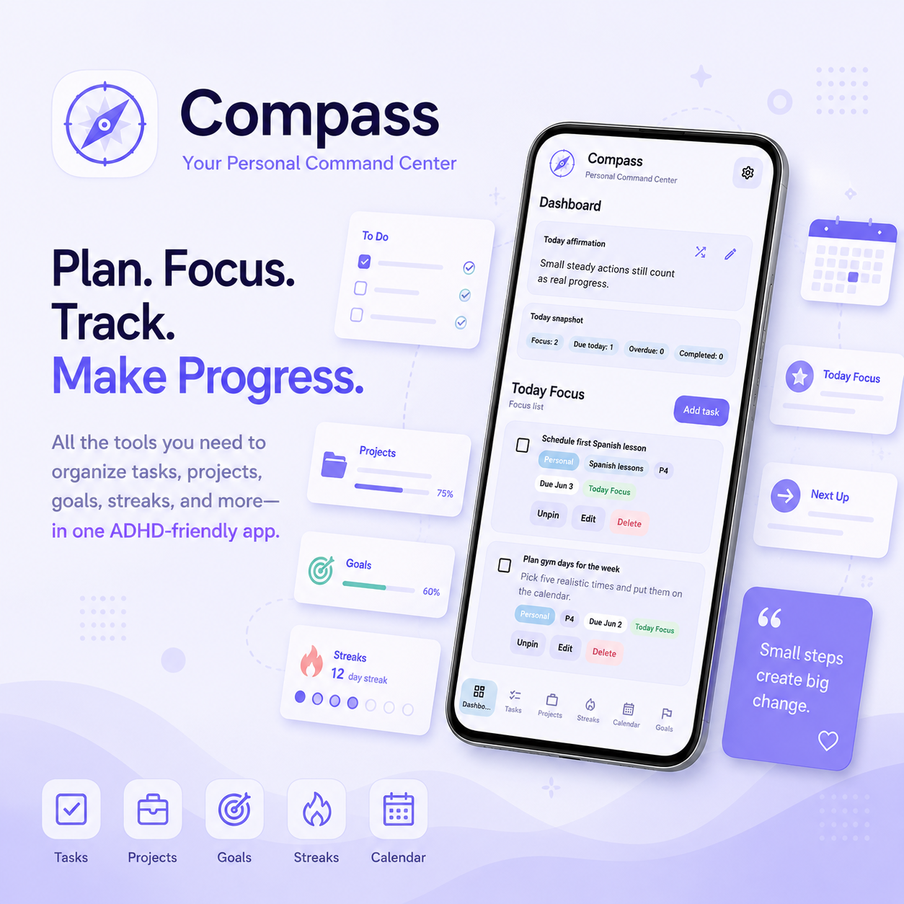

MindKit
Whole-person mental wellness tools gathered into one calm, grounding space.
- Daily support and check-in tools
- Calming practices and emotional regulation resources
- Designed to reduce overwhelm, not add to it
ZenPath Apps
Each app is built to serve a distinct need, from emotional skills to routines, thought reframing, and steady whole-person support.
Whole-person mental wellness tools gathered into one calm, grounding space.

Gentle structure for busy complicated everyday lives.

Practical DBT skills for emotional intensity, conflict, urges, and everyday coping moments.

Thought tools for reframing, grounding, insight, and building self-awareness with compassion.